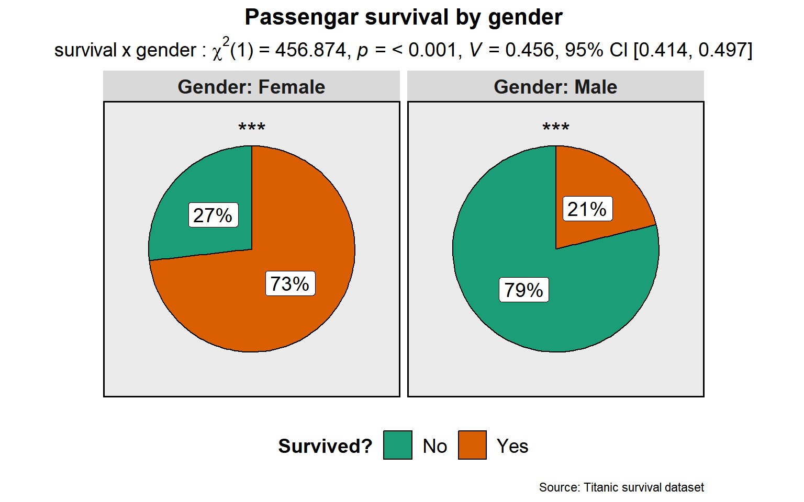
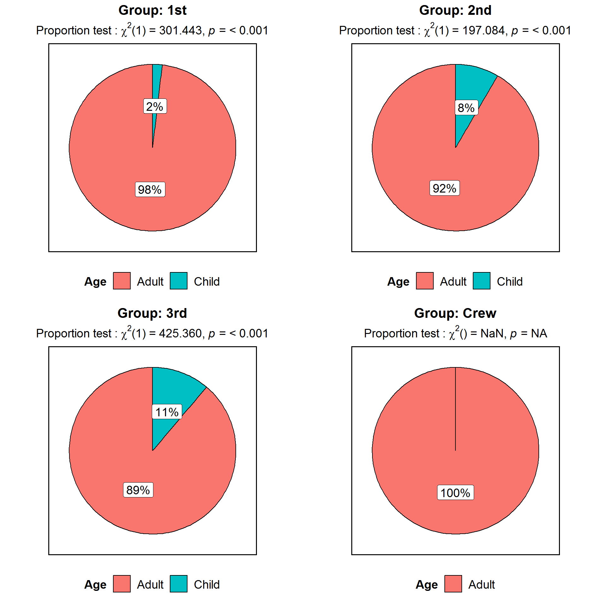
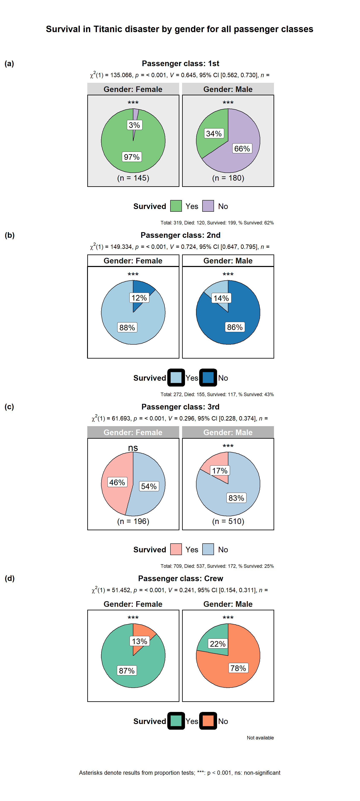
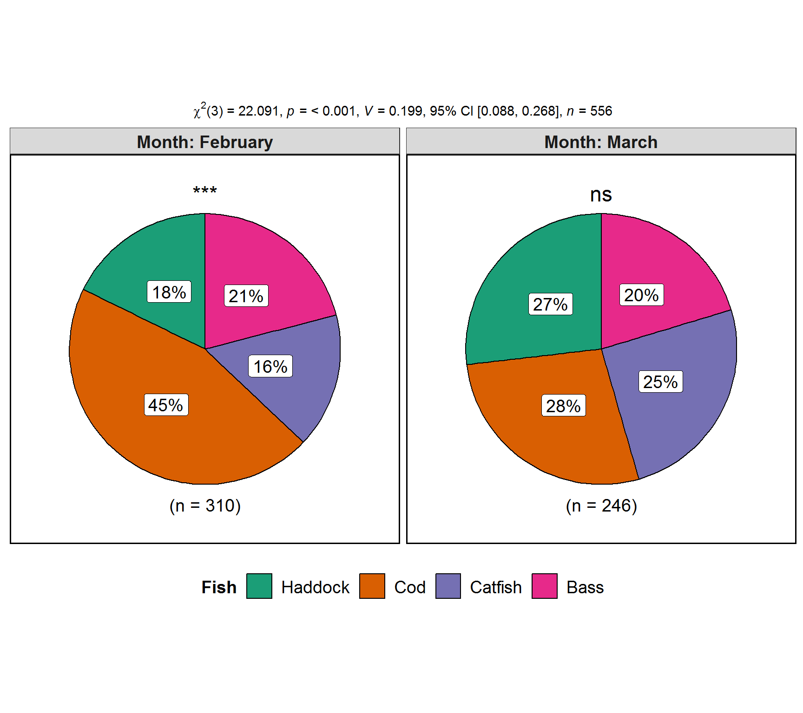

The function ggstatsplot::ggpiestats can be used for quick data exploration and/or to prepare publication-ready pie charts to summarize the statistical relationship between two categorical variables. We will see examples of how to use this function in this vignette.
To begin with, here are some instances where you would want to use ggpiestats-
- to see if the frequency distribution of two categorical variables are independent of each other using the contingency table analysis
- to check if the proportion of observations at each level of a categorical variable is equal
Note before: The following demo uses the pipe operator (%>%), so in case you are not familiar with this operator, here is a good explanation: http://r4ds.had.co.nz/pipes.html
Statistical independence of categorical variables with ggpiestats
To demonstrate how ggpiestats can be used to we will be using the Titanic dataset that is included in the datasets library. Titanic Passenger Survival Data Set provides information “on the fate of passengers on the fatal maiden voyage of the ocean liner Titanic, summarized according to economic status (class), sex, age, and survival.”
Let’s have a look at the structure of this table and also convert it into a tibble while we are at it.
library(datasets)
library(dplyr)
# looking at the table
dplyr::glimpse(x = Titanic)
#> 'table' num [1:4, 1:2, 1:2, 1:2] 0 0 35 0 0 0 17 0 118 154 ...
#> - attr(*, "dimnames")=List of 4
#> ..$ Class : chr [1:4] "1st" "2nd" "3rd" "Crew"
#> ..$ Sex : chr [1:2] "Male" "Female"
#> ..$ Age : chr [1:2] "Child" "Adult"
#> ..$ Survived: chr [1:2] "No" "Yes"Note that the last column in this dataframe contains count information, which means we will have to modify it to reflect this count structure. This has already been carried out and the final dataset is included in the ggstatsplot package in Titanic_full. This is not necessary as ggpiestats can handle table structures as well (see examples below).
Let’s have a look at this dataset.
library(ggstatsplot)
# looking at the final dataset
dplyr::glimpse(ggstatsplot::Titanic_full)
#> Observations: 2,201
#> Variables: 5
#> $ id <dbl> 1, 2, 3, 4, 5, 6, 7, 8, 9, 10, 11, 12, 13, 14, 15, 16...
#> $ Class <fct> 3rd, 3rd, 3rd, 3rd, 3rd, 3rd, 3rd, 3rd, 3rd, 3rd, 3rd...
#> $ Sex <fct> Male, Male, Male, Male, Male, Male, Male, Male, Male,...
#> $ Age <fct> Child, Child, Child, Child, Child, Child, Child, Chil...
#> $ Survived <fct> No, No, No, No, No, No, No, No, No, No, No, No, No, N...First, let’s see if the proportion of people who survived was different between sexes using ggpiestats.
# since effect size confidence intervals are computed using bootstrapping, let's
# set seed for reproducibility
set.seed(123)
ggstatsplot::ggpiestats(data = ggstatsplot::Titanic_full,
condition = Sex,
main = Survived)
#> Note: 95% CI for Cramer's V was computed with 25 bootstrap samples.
A number of arguments can be modified to change the appearance of this plot:
library(ggplot2)
# for reproducibility
set.seed(123)
# plot
ggstatsplot::ggpiestats(
data = ggstatsplot::Titanic_full, # dataframe (matrix or table will not be accepted)
main = Survived, # rows in the contingency table
condition = Sex, # columns in the contingecy table
title = "Passengar survival by gender", # title for the entire plot
caption = "Source: Titanic survival dataset", # caption for the entire plot
legend.title = "Survived?", # legend title
facet.wrap.name = "Gender", # changing the facet wrap title
facet.proptest = TRUE, # proportion test for each facet
stat.title = "survival x gender: ", # title for statistical test
k = 2, # no. of decimal places for results
ggtheme = ggplot2::theme_grey(), # changing plot theme
package = "yarrr", # package from which color palette is to be taken
palette = "southpark" # choosing a different color palette
) + # further modification with ggplot2 commands
ggplot2::theme(plot.subtitle = ggplot2::element_text(
color = "black",
size = 10,
hjust = 0.5
))
#> Note: 95% CI for Cramer's V was computed with 25 bootstrap samples.
As seen from this plot, the Pearson’s chi-square test of independence shows that the distribution of survival was different across males and females. Additionally, among both males and females, the proportion of survival was not equally likely (at 50%, i.e.), as shown by significant results (***) from one-sample proportion tests for each facet.
In case the condition argument is not specified, instead of chi-square test of independence, a proportion test will be carried out. For example, let’s see if there were equal proportions of different age groups.
ggstatsplot::ggpiestats(
data = ggstatsplot::Titanic_full,
main = Age,
package = "wesanderson",
palette = "IsleofDogs1"
)
As this plot shows there were overwhelmingly more number of adults than children on the boat and the proportion test attests to this.
Grouped analysis with grouped_ggpiestats
What if we want to do the same analysis separately for the four different Class on the Titanic (1st, 2nd, 3rd, Crew), i.e. checking how the survival-by-gender interaction changes by the passenger class in which the people were traveling? In that case, we will have to either write a for loop or use purrr, both of which are time consuming and can be a bit of a struggle.
ggstatsplot provides a special helper function for such instances: grouped_ggpiestats. This is merely a wrapper function around ggstatsplot::combine_plots. It applies ggpiestats across all levels of a specified grouping variable and then combines list of individual plots into a single plot. Note that the grouping variable can be anything: conditions in a given study, groups in a study sample, different studies, etc.
ggstatsplot::grouped_ggpiestats(
# arguments relevant for ggstatsplot::gghistostats
data = ggstatsplot::Titanic_full,
grouping.var = Class,
title.prefix = "Passenger class",
stat.title = "survival x gender: ",
main = Survived,
condition = Sex,
# arguments relevant for ggstatsplot::combine_plots
title.text = "Survival in Titanic disaster by gender for all passenger classes",
caption.text = "Asterisks denote results from proportion tests; ***: p < 0.001, ns: non-significant",
nrow = 4,
ncol = 1,
labels = c("(a)","(b)","(c)", "(d)")
)
#> Note: 95% CI for Cramer's V was computed with 25 bootstrap samples.Note: 95% CI for Cramer's V was computed with 25 bootstrap samples.Note: 95% CI for Cramer's V was computed with 25 bootstrap samples.Note: 95% CI for Cramer's V was computed with 25 bootstrap samples.
As seen from this quick exploratory analysis, across all passenger classes, the proportion of survived to non-survived individuals differed across genders: Men were more likely to perish than survive, whereas women were more likely to survive than perish. The only exception was the 3rd Class passengers where women were as likely to survive as to perish.
This will work even if the condition argument is not specified:
ggstatsplot::grouped_ggpiestats(
data = ggstatsplot::Titanic_full,
main = Age,
grouping.var = Class,
title.prefix = "Passenger Class",
package = "ggsci",
palette = "category10_d3",
direction = -1
) 
Grouped analysis with ggpiestats + purrr
Although this grouping function provides a quick way to explore the data, it leaves much to be desired. For example, we may want to add different captions, titles, themes, or palettes for each level of the grouping variable, etc. For cases like these, it would be better to use (e.g.).
Note before: Unlike the function call so far, while using purrr::pmap, we will need to quote the arguments.
# let's split the dataframe and create a list by passenger class
class_list <- ggstatsplot::Titanic_full %>%
base::split(x = ., f = .$Class, drop = TRUE)
# this created a list with 4 elements, one for each class
# you can check the structure of the file for yourself
# str(class_list)
# checking the length and names of each element
length(class_list)
#> [1] 4
names(class_list)
#> [1] "1st" "2nd" "3rd" "Crew"
# running function on every element of this list note that if you want the same
# value for a given argument across all elements of the list, you need to
# specify it just once
plot_list <- purrr::pmap(
.l = list(
data = class_list,
main = "Survived",
condition = "Sex",
facet.wrap.name = "Gender",
title = list(
"Passenger class: 1st",
"Passenger class: 2nd",
"Passenger class: 3rd",
"Passenger class: Crew"
),
caption = list(
"Total: 319, Died: 120, Survived: 199, % Survived: 62%",
"Total: 272, Died: 155, Survived: 117, % Survived: 43%",
"Total: 709, Died: 537, Survived: 172, % Survived: 25%",
"Data not available for crew passengers"
),
package = list("RColorBrewer", "ghibli", "palettetown", "yarrr"),
palette = list("Accent", "MarnieMedium1", "pikachu", "nemo"),
ggtheme = list(
ggplot2::theme_grey(),
ggplot2::theme_classic(),
ggthemes::theme_tufte(),
ggthemes::theme_economist()
),
ggstatsplot.layer = list(TRUE, TRUE, FALSE, FALSE),
sample.size.label = list(TRUE, FALSE, TRUE, FALSE),
messages = FALSE
),
.f = ggstatsplot::ggpiestats
)
# combining all individual plots from the list into a single plot using combine_plots function
ggstatsplot::combine_plots(
plotlist = plot_list,
title.text = "Survival in Titanic disaster by gender for all passenger classes",
caption.text = "Asterisks denote results from proportion tests; ***: p < 0.001, ns: non-significant",
nrow = 4,
ncol = 1,
labels = c("(a)","(b)","(c)", "(d)")
)
As can be appreciated from this example, although grouped_ggpiestats provides a quick way to explore data, purrr::pmap lets us utilize the full functionality of this function and ggplot2.
Working with counts data
ggpiestats can also work with dataframe containing counts (aka tabled data), i.e., when each row doesn’t correspond to a unique observation. For example, consider the following fishing dataframe containing data from two boats (A and B) about the number of different types fish they caught in the months of February and March. In this dataframe, each row doesn’t equal a unique observation. In such cases, we can use counts argument. Let’s say we want to investigate if the frequency of different types of fish caught differs across the two months:
# for reproducibility
set.seed(123)
# creating a dataframe
# (this is completely fictional; I don't know first thing about fishing!)
(
fishing <- data.frame(
Boat = c(rep("B", 4), rep("A", 4), rep("A", 4), rep("B", 4)),
Month = c(rep("February", 2), rep("March", 2), rep("February", 2), rep("March", 2)),
Fish = c(
"Bass",
"Catfish",
"Cod",
"Haddock",
"Cod",
"Haddock",
"Bass",
"Catfish",
"Bass",
"Catfish",
"Cod",
"Haddock",
"Cod",
"Haddock",
"Bass",
"Catfish"
),
SumOfCaught = c(25, 20, 35, 40, 40, 25, 30, 42, 40, 30, 33, 26, 100, 30, 20, 20)
) %>% # converting to a tibble dataframe
tibble::as_data_frame(x = .)
)
#> # A tibble: 16 x 4
#> Boat Month Fish SumOfCaught
#> <fct> <fct> <fct> <dbl>
#> 1 B February Bass 25
#> 2 B February Catfish 20
#> 3 B March Cod 35
#> 4 B March Haddock 40
#> 5 A February Cod 40
#> 6 A February Haddock 25
#> 7 A March Bass 30
#> 8 A March Catfish 42
#> 9 A February Bass 40
#> 10 A February Catfish 30
#> 11 A March Cod 33
#> 12 A March Haddock 26
#> 13 B February Cod 100
#> 14 B February Haddock 30
#> 15 B March Bass 20
#> 16 B March Catfish 20
# running `ggpiestats` with counts information
ggstatsplot::ggpiestats(
data = fishing,
main = Fish,
condition = Month,
counts = SumOfCaught,
package = "ggsci",
palette = "default_jama"
)
#> Note: 95% CI for Cramer's V was computed with 25 bootstrap samples.
We just verified that the frequency of different types of fish caught differs across the two months, but what if we further want to know if this difference is present for both boats (since they are fishing in different parts of the sea)? For this, we can again utilize grouped_ggpiestats:
# running the grouped variant of the function
ggstatsplot::grouped_ggpiestats(
data = fishing,
main = Fish,
condition = Month,
counts = SumOfCaught,
grouping.var = Boat,
title.prefix = "Boat",
nrow = 2
)
#> Note: 95% CI for Cramer's V was computed with 25 bootstrap samples.Note: 95% CI for Cramer's V was computed with 25 bootstrap samples.
As seen from these charts, this difference is found only for the location in which the boat B has been fishing. Additionally, faceted proportion tests also reveal that all fish are not equally likely to be caught at this location.
Within-subjects designs
In case of within-subjects designs, you can set paired = TRUE, which will display results from McNemar test in the subtitle.
# seed for reproducibility
set.seed(123)
# data
clinical_trial <-
tibble::tribble(
~Control, ~Case, ~pairs,
"No", "Yes", 25,
"Yes", "No", 4,
"Yes", "Yes", 13,
"No", "No", 92
)
# plot
ggstatsplot::ggpiestats(data = clinical_trial,
condition = Control,
main = Case,
counts = pairs,
paired = TRUE,
stat.title = "McNemar test: ",
title = "Results from case-control study",
package = "ggsci",
palette = "default_ucscgb",
direction = -1) 
Suggestions
If you find any bugs or have any suggestions/remarks, please file an issue on GitHub: https://github.com/IndrajeetPatil/ggstatsplot/issues
Session Information
Summarizing session information for reproducibility.
options(width = 200)
devtools::session_info()
#> Session info ------------------------------------------------------------------------------------------------------------------------------------------------------------------------------------------
#> setting value
#> version R version 3.5.1 (2018-07-02)
#> system x86_64, mingw32
#> ui RTerm
#> language (EN)
#> collate English_United States.1252
#> tz America/New_York
#> date 2018-09-12
#> Packages ----------------------------------------------------------------------------------------------------------------------------------------------------------------------------------------------
#> package * version date source
#> assertthat 0.2.0 2017-04-11 CRAN (R 3.5.0)
#> backports 1.1.2 2017-12-13 CRAN (R 3.5.0)
#> base * 3.5.1 2018-07-02 local
#> bayesplot 1.6.0 2018-08-02 CRAN (R 3.5.1)
#> bindr 0.1.1 2018-03-13 CRAN (R 3.5.0)
#> bindrcpp * 0.2.2 2018-03-29 CRAN (R 3.5.0)
#> boot 1.3-20 2017-08-06 CRAN (R 3.5.1)
#> broom 0.5.0.9001 2018-08-09 Github (tidymodels/broom@93610ae)
#> ca 0.70 2016-12-14 CRAN (R 3.5.0)
#> cli 1.0.0 2017-11-05 CRAN (R 3.5.0)
#> coda 0.19-1 2016-12-08 CRAN (R 3.5.0)
#> codetools 0.2-15 2016-10-05 CRAN (R 3.5.1)
#> coin 1.2-2 2017-11-28 CRAN (R 3.5.0)
#> colorspace 1.3-2 2016-12-14 CRAN (R 3.5.0)
#> commonmark 1.5 2018-04-28 CRAN (R 3.5.0)
#> compiler 3.5.1 2018-07-02 local
#> cowplot 0.9.99 2018-08-23 Github (wilkelab/cowplot@374c3e9)
#> crayon 1.3.4 2017-09-16 CRAN (R 3.5.0)
#> data.table 1.11.4 2018-05-27 CRAN (R 3.5.0)
#> datasets * 3.5.1 2018-07-02 local
#> desc 1.2.0 2018-05-01 CRAN (R 3.5.0)
#> devtools 1.13.6 2018-06-27 CRAN (R 3.5.1)
#> digest 0.6.17 2018-09-12 CRAN (R 3.5.1)
#> dplyr * 0.7.6 2018-06-29 CRAN (R 3.5.0)
#> effsize 0.7.1 2017-03-21 CRAN (R 3.5.0)
#> emmeans 1.2.3 2018-07-18 CRAN (R 3.5.1)
#> estimability 1.3 2018-02-11 CRAN (R 3.5.0)
#> evaluate 0.11 2018-07-17 CRAN (R 3.5.1)
#> fansi 0.3.0 2018-08-13 CRAN (R 3.5.1)
#> forcats 0.3.0 2018-02-19 CRAN (R 3.5.0)
#> foreign 0.8-70 2017-11-28 CRAN (R 3.5.1)
#> fs 1.2.6 2018-08-23 CRAN (R 3.5.1)
#> ggcorrplot 0.1.2 2018-09-11 CRAN (R 3.5.1)
#> ggExtra 0.8 2018-08-14 Github (daattali/ggExtra@76d1618)
#> ggplot2 * 3.0.0.9000 2018-09-05 Github (tidyverse/ggplot2@f636f34)
#> ggrepel 0.8.0.9000 2018-09-09 Github (slowkow/ggrepel@91877ca)
#> ggridges 0.5.0 2018-04-05 CRAN (R 3.5.0)
#> ggstatsplot * 0.0.5.9000 2018-09-12 local
#> ggthemes 4.0.1 2018-08-24 CRAN (R 3.5.1)
#> glmmTMB 0.2.2.0 2018-07-03 CRAN (R 3.5.1)
#> glue 1.3.0 2018-07-17 CRAN (R 3.5.1)
#> gnm 1.1-0 2018-06-21 CRAN (R 3.5.0)
#> graphics * 3.5.1 2018-07-02 local
#> grDevices * 3.5.1 2018-07-02 local
#> grid 3.5.1 2018-07-02 local
#> gtable 0.2.0 2016-02-26 CRAN (R 3.5.0)
#> haven 1.1.2 2018-06-27 CRAN (R 3.5.0)
#> hms 0.4.2 2018-03-10 CRAN (R 3.5.0)
#> htmltools 0.3.6 2017-04-28 CRAN (R 3.5.0)
#> httpuv 1.4.5 2018-07-19 CRAN (R 3.5.1)
#> jmv 0.9.2.0 2018-08-12 CRAN (R 3.5.1)
#> jmvcore 0.9.2.0 2018-08-12 CRAN (R 3.5.1)
#> knitr 1.20.12 2018-08-13 local
#> labeling 0.3 2014-08-23 CRAN (R 3.5.0)
#> later 0.7.4 2018-08-31 CRAN (R 3.5.1)
#> lattice 0.20-35 2017-03-25 CRAN (R 3.5.1)
#> lazyeval 0.2.1 2017-10-29 CRAN (R 3.5.0)
#> lme4 1.1-18-1 2018-08-17 CRAN (R 3.5.1)
#> lmtest 0.9-36 2018-04-04 CRAN (R 3.5.0)
#> magrittr 1.5 2014-11-22 CRAN (R 3.5.0)
#> MASS 7.3-50 2018-04-30 CRAN (R 3.5.1)
#> Matrix 1.2-14 2018-04-13 CRAN (R 3.5.1)
#> mc2d 0.1-18 2017-03-06 CRAN (R 3.5.0)
#> memoise 1.1.0 2017-04-21 CRAN (R 3.5.0)
#> methods * 3.5.1 2018-07-02 local
#> mime 0.5 2016-07-07 CRAN (R 3.5.0)
#> miniUI 0.1.1.1 2018-05-18 CRAN (R 3.5.0)
#> minqa 1.2.4 2014-10-09 CRAN (R 3.5.0)
#> mnormt 1.5-5 2016-10-15 CRAN (R 3.5.0)
#> modelgenerics 0.0.1.9000 2018-08-09 Github (topepo/modelgenerics@fc41419)
#> modelr 0.1.2 2018-05-11 CRAN (R 3.5.0)
#> modeltools 0.2-22 2018-07-16 CRAN (R 3.5.1)
#> multcomp 1.4-8 2017-11-08 CRAN (R 3.5.0)
#> munsell 0.5.0 2018-06-12 CRAN (R 3.5.0)
#> mvtnorm 1.0-8 2018-05-31 CRAN (R 3.5.0)
#> nlme 3.1-137 2018-04-07 CRAN (R 3.5.1)
#> nloptr 1.0.4 2017-08-22 CRAN (R 3.5.0)
#> nnet 7.3-12 2016-02-02 CRAN (R 3.5.0)
#> paletteer 0.1.0 2018-07-10 CRAN (R 3.5.1)
#> parallel 3.5.1 2018-07-02 local
#> pillar 1.3.0.9000 2018-07-23 Github (r-lib/pillar@7582a75)
#> pkgconfig 2.0.2 2018-08-16 CRAN (R 3.5.1)
#> pkgdown 1.1.0 2018-06-02 CRAN (R 3.5.1)
#> plyr 1.8.4 2016-06-08 CRAN (R 3.5.0)
#> prediction 0.3.6 2018-05-22 CRAN (R 3.5.0)
#> promises 1.0.1 2018-04-13 CRAN (R 3.5.0)
#> psych 1.8.4 2018-05-06 CRAN (R 3.5.0)
#> purrr 0.2.5 2018-05-29 CRAN (R 3.5.0)
#> purrrlyr 0.0.3 2018-05-29 CRAN (R 3.5.0)
#> pwr 1.2-2 2018-03-03 CRAN (R 3.5.0)
#> qvcalc 0.9-1 2017-09-19 CRAN (R 3.5.0)
#> R6 2.2.2 2017-06-17 CRAN (R 3.5.0)
#> Rcpp 0.12.18 2018-07-23 CRAN (R 3.5.1)
#> relimp 1.0-5 2016-03-30 CRAN (R 3.5.0)
#> reshape 0.8.7 2017-08-06 CRAN (R 3.5.0)
#> rjson 0.2.20 2018-06-08 CRAN (R 3.5.0)
#> rlang 0.2.2 2018-08-16 CRAN (R 3.5.1)
#> rmarkdown 1.10 2018-06-11 CRAN (R 3.5.0)
#> roxygen2 6.1.0.9000 2018-08-26 Github (klutometis/roxygen@7032ed1)
#> rprojroot 1.3-2 2018-01-03 CRAN (R 3.5.0)
#> rstudioapi 0.7 2017-09-07 CRAN (R 3.5.0)
#> sandwich 2.5-0 2018-08-17 CRAN (R 3.5.1)
#> scales 1.0.0 2018-08-09 CRAN (R 3.5.1)
#> shiny 1.1.0 2018-05-17 CRAN (R 3.5.0)
#> sjlabelled 1.0.14 2018-09-12 CRAN (R 3.5.1)
#> sjmisc 2.7.4 2018-08-04 CRAN (R 3.5.1)
#> sjstats 0.17.0 2018-08-20 CRAN (R 3.5.1)
#> snakecase 0.9.2 2018-08-14 CRAN (R 3.5.1)
#> splines 3.5.1 2018-07-02 local
#> stats * 3.5.1 2018-07-02 local
#> stats4 3.5.1 2018-07-02 local
#> stringdist 0.9.5.1 2018-06-08 CRAN (R 3.5.0)
#> stringi 1.2.4 2018-07-20 CRAN (R 3.5.1)
#> stringr 1.3.1 2018-05-10 CRAN (R 3.5.0)
#> survival 2.42-3 2018-04-16 CRAN (R 3.5.1)
#> TH.data 1.0-9 2018-07-10 CRAN (R 3.5.1)
#> tibble 1.4.2 2018-01-22 CRAN (R 3.5.1)
#> tidyr 0.8.1 2018-05-18 CRAN (R 3.5.0)
#> tidyselect 0.2.4 2018-02-26 CRAN (R 3.5.0)
#> TMB 1.7.14 2018-06-23 CRAN (R 3.5.0)
#> tools 3.5.1 2018-07-02 local
#> utf8 1.1.4 2018-05-24 CRAN (R 3.5.0)
#> utils * 3.5.1 2018-07-02 local
#> vcd 1.4-4 2017-12-06 CRAN (R 3.5.0)
#> vcdExtra 0.7-1 2017-09-29 CRAN (R 3.5.0)
#> withr 2.1.2 2018-03-15 CRAN (R 3.5.0)
#> WRS2 0.10-0 2018-06-15 CRAN (R 3.5.0)
#> xfun 0.3 2018-07-06 CRAN (R 3.5.1)
#> xml2 1.2.0 2018-01-24 CRAN (R 3.5.0)
#> xtable 1.8-3 2018-08-29 CRAN (R 3.5.1)
#> yaml 2.2.0 2018-07-25 CRAN (R 3.5.1)
#> zoo 1.8-3 2018-07-16 CRAN (R 3.5.1)